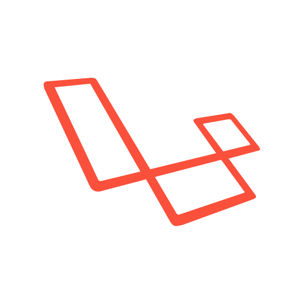

Nanako Mori
Front-end Engineer
Profile
Nanako Mori
高校を卒業後、社会人経験を経て進学し、C言語の基礎など主に情報分野について学びました。
大学在学中の2013年より、Webコーダーとして実務経験を積みました。
現在はLaravel, TypeScriptを中心に、フロントエンドエンジニアとしてのスキルを磨いています。
使用する技術・ツール


- 


Works
※画像はクリック/タップで拡大します。

にゃんbot
テキストメッセージを送信すると、語尾に「にゃん」をつけて返信するLINE botです。
現在作成中の作品です。

持ち歌リスト
カラオケで歌いたい曲や、メモを記録することができるWebアプリケーションです。
Contact